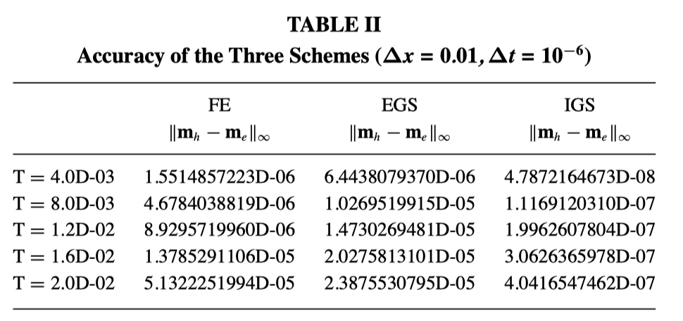
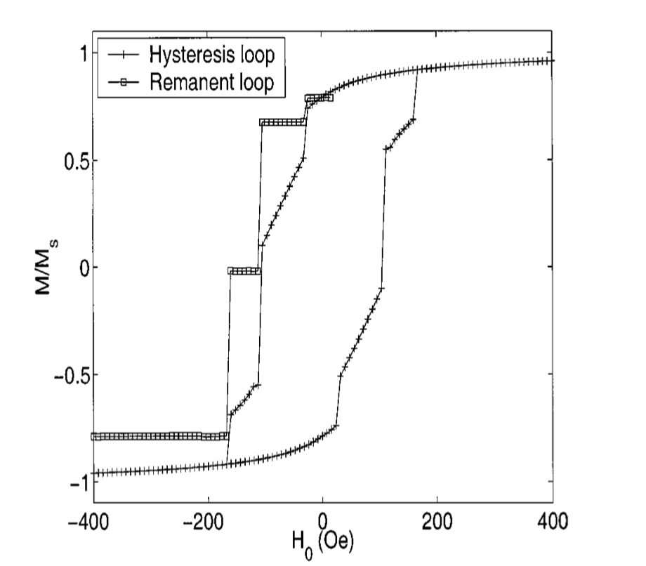

用于微磁模拟的Gauss-Seidel投影方法
微磁学仿真中的主要困难之一是交换场引入了严格的时间步长约束。使用标准的显式积分器会导致亚皮秒级的物理时间步长，通常比最快的物理时间尺度小两个数量级。直接的隐式积分器需要解决复杂的耦合系统。在本文中我们介绍了一种隐式方法，其复杂度可与隐式求解标量热方程相媲美。该方法是基于Gauss-Seidel实施的针对旋磁项的分数阶隐式求解器和针对谐波图的热流投影方法的组合。这种方法是我们能够对微米级元素中磁化强度进行完全解析的计算。
介绍
从科学和技术的观点来看，铁磁薄膜中磁化分布的动力学是一个有趣且重要的问题。通常，这些薄膜的主要兴趣在于它们在磁记录行业中的应用。最近，对将它们用作磁存储器件（MRAM）的兴趣已经激发了研究该主题的更大动力。由于缺陷，杂质和热噪声在纳米厚度的膜中对磁化场的动力学起着重要作用，因此它也成为研究某些纳米级物理的理想场所[4，7，8，10，18]
铁磁材料中磁化分布的弛豫(relaxation)过程由Landau–Lifshitz方程[12，14]描述
\[\mathbf{M}_{t}=-\gamma \mathbf{M} \times \mathcal{H}-\frac{\gamma \alpha}{M_{s}} \mathbf{M} \times(\mathbf{M} \times \mathcal{H}) \tag1\]
其中\(|\mathbf{M}|=M_{s}\)是饱和磁化强度，通常设置为一个远离居里温度的常数。右边第一项是旋磁项，其中\(\gamma\)是旋磁比。右边第二项是阻尼项，其中\(\alpha\)是无量纲的阻尼系数。\(\mathcal{H}\)项是局部场，由Landau–Lifshitz自由能函数计算得到
\[
\mathcal{H}=-\frac{\delta F}{\delta \mathbf{M}} \tag2
\]
\[\tiny{
F[\mathbf{M}]=\frac{1}{2} \int_{\Omega}\left\{\Phi\left(\frac{\mathbf{M}}{M_{s}}\right)+\frac{A}{M_{s}^{2}}|\nabla \mathbf{M}|^{2}-2 \mu_{0} \mathbf{H}_{e} \cdot \mathbf{M}\right\} d x+\frac{\mu_{0}}{2} \int_{\mathbb{R}^{3}}|\nabla U|^{2} d x}
\tag3\]
在（3）中，\(A\)是交换常数，\(\frac{A}{M_{s}^{2}}|\nabla M|^{2}\)是自旋之间的交换相互作用能。\(\Phi\left(\frac{\mathrm{M}}{M_{s}}\right)\)是自材料的各向异性的能量。\(\mu_0\)是真空磁导率(S.I.中\(\mu_0=4\pi\times10^{-7} N/A^2\))\(-2 \mu_{0} \mathbf{H}_{e} \cdot \mathbf{M}\)是由外部施加场产生的能量。\(\Omega\)是材料所占的体积。最后,(3)中的最后一项是由材料内部磁化分布感应的磁场产生的能量。感应场\(\mathbf{H}_{s}=-\nabla U\)可以通过以下求解
\[
\Delta U=\left\{\begin{array}{ll}{\nabla \cdot \mathbf{M}} & {\text { in } \Omega} \\ {0} & {\text { outside } \Omega}\end{array}\right.
\tag4\]
连同跳跃条件
\[
\begin{aligned} \left[U\right]_{\partial \Omega} &=0 \\\left[\frac{\partial U}{\partial v}\right]_{\partial \Omega} &=-\mathbf{M} \cdot v\end{aligned}
\tag5\]
在域\(\Omega\)的边界。在(5)中,我们用\([v]_{\partial \Omega}\)表示\(v\)在\(\Omega\)边界的跳跃。
\[
[v]_{ | \partial \Omega}(x)=\lim _{y \rightarrow x \atop y \in \overline{\Omega}^{c}} v(y)-\lim _{y \rightarrow x \atop y \in \Omega} v(y)
\]
方程(4)，与边界条件(5)的解为
\[
\nabla U(x)=\nabla \int_{\Omega} \nabla N(x-y) \cdot \mathbf{M}(y) d y \tag6
\]
其中\(N(x)=-\frac{1}{4 \pi} \frac{1}{|x|}\)是牛顿势。
Landau–Lifshitz方程(1)中旋磁项是一个保守项，而阻尼项是耗散的。
了解Landau–Lifshitz系统(1)的长期动力学对于设计有效的计算机磁化切换机制具有实际意义。
存储单元[4，18]。数值模拟已成为研究铁磁材料中静态和动态问题的重要工具[1、2、6、9、11、15、16、19、26]。在磁化反转过程的仿真中，重要的是能够解析出所涉及的不同小长度尺度，尤其是磁畴壁和磁涡旋，因为它们是在亚微米图案化NiFe实验中观察到的开关异常的原因。数组[17，21，22，23，24]。明确的数字格式（例如四阶Runge-Kutta或具有某种自适应时间步长程序的预测器-校正器方案）是目前最常用的Landau-Lifshitz方程模拟方法。尽管显式方案可以在空间和时间上达到很高的准确性，时间步长的大小受到数值方案稳定性的严格限制。对于坡莫合金的物理常数(\(M_{s}=8.0 \times 10^{5}\) Ampere \(/ \mathrm{m}, K_{u}=5.0 \times 10^{2} \mathrm{J} / \mathrm{m}^{3}, A=1.3 \times 10^{-11} \mathrm{J} / \mathrm{m}, \gamma=1.76 \times 10^{11} T^{-1}s^{-1}\)),单位大小\(\Delta x=0.004 \mu \mathrm{m}\)（在1 µm长的样本中为256个网格点)，并且使用四阶Runge–Kutta，我们需要使用大约\(\Delta t\)≈.25皮秒量级的时间步长来实现数值稳定性。如果将像元大小减小10倍，则必须将时间步长\(\Delta t\)减小100倍。此外，在典型的磁滞回线中，相对于所施加磁场的变化，平均磁化强度的变化表现为 在切换场附近和远离切换场有很大的不同，相距不远，并且随着所施加的场接近切换场而突然改变。这些考虑表明，需要具有时间适应性的Landau–Lifshitz方程数值积分方案。 构建这种方法的第一步是构建无条件稳定的数值方案。
为了克服显式方案的稳定性约束，通常采用隐式方案[15]。但是，由于在Landau–Lifshitz方程（1）中的回旋和阻尼项中都存在很强的非线性，因此系统的直接隐式离散化效率不高且难以实现。为了理解问题的症结，让我们将注意力集中在仅交换条件在（2）中成立的情况下。在这种情况下，\(\mathcal{H}=\Delta \mathbf{m}\)和Landau–Lifshitz方程简化为
\[
\mathbf{m}_{t}=-\mathbf{m} \times \Delta \mathbf{m}-\mathbf{m} \times(\mathbf{m} \times \Delta \mathbf{m}) \tag7
\]
我们的目标是为（7）开发一个稳定的数值方案，使我们可以使用较大的时间步长。旋磁项和阻尼项将需要不同的处理。当仅存在阻尼项时，方程（7）变为
\[
\mathbf{m}_{t}=-\mathbf{m} \times(\mathbf{m} \times \Delta \mathbf{m})=\Delta \mathbf{m}+|\nabla \mathbf{m}|^{2} \mathbf{m}
\tag 8\]
该方程式描述了谐波图的热流。在[5]中，为该方程引入了一个简单的投影方案。与用于模拟方程(8)的其他方案相比，该方案被证明是无条件稳定和高效的。
在本文中，我们将主要关注Landau–Lifshitz方程中的旋磁项:
\[
\mathbf{m}_{t}=-\mathbf{m} \times \Delta \mathbf{m}
\tag9\]
该方程为谐波图的辛流[3，25]。我们为（9）引入了一种简单有效的方案，该方案也是无条件稳定的。这个新方案的关键是观察到，由于方程的矢量积结构，高斯-赛德尔（Gauss-Seidel）类型的技术显着提高了Landau-Lifshitz方程显式格式的稳定性。然后，将此高斯－赛德尔技术与拆分过程一起使用，以获得有效的，更重要的是无条件稳定的方案。除了简单性和无条件的稳定性外，该方案在某种意义上也是刻板的。结合阻尼部分的投影方案，我们对整个Landau–Lifshitz方程有一个无条件稳定的方案。
我们将我们的方法应用于图案化亚微米阵列中异常切换的仿真。 Jing Shi等人[17，21–24]在实验中观察到了这一点捕获的磁化涡旋是开关异常的原因。 这个问题的数值模拟非常苛刻。 为了计算磁滞回线和剩余磁化曲线，需要运行100多个到稳态的演化，同时，在每个方向上需要256个以上的网格点才能解决涡旋和畴壁。
本文的组织结构如下：在第2节中，我们将通过分析一个简单的示例来研究Landau–Lifshitz方程的矢量性质对几种常用时间步进程序的稳定性的影响。我们介绍了高斯－赛德尔技术，并对这一技术提高了显式方案的稳定性进行了重要观察。在第3节中，我们引入了利用高斯-赛德尔（Gauss-Seidel）技术的（9）的分步程序。上一节的分析表明，我们的方案是无条件稳定的。在第4节中，我们将我们的方案的性能与两种不同的显式方案的性能进行了谐波图的辛流动。在第5节中，我们结合了新方法 用[5]中推导的谐波图的热流投影方法，并为整个Landau-Lifshitz方程引入高斯-塞德尔投影方法。在第6节中，我们回顾了一些开关异常实验，并给出了使用高斯-赛德尔投影法进行的数值模拟。我们能够解析涡旋动力学，并准确模拟[17，21–24]中观察到的切换异常。
一个简答的例子\(\frac{d \mathbf{m}}{d t}=-\mathbf{a} \times \mathbf{m}\)
当考虑时间步长方案时，Landau-Lifshitz方程(1)的矢量结构表现出一些有趣的特征。为了欣赏这一点，让我们首先考虑简单的线性矢量方程
\[
\frac{d \mathbf{m}}{d t}=-\mathbf{a} \times \mathbf{m} \tag{10}
\]
其中，\(a^{T}=\left(a_{1}, a_{2}, a_{3}\right)\)是一个常数向量。
2.1标准单步方法
方程10的向前欧拉法为
\[
\mathbf{m}^{n+1}=\mathbf{m}^{n}-\Delta t\left(\mathbf{a} \times \mathbf{m}^{n}\right)
\tag{11}\]
或以其分量形式
\[
\left(\begin{array}{c}{m_{1}^{n+1}} \\ {m_{2}^{n+1}} \\ {m_{3}^{n+1}}\end{array}\right)=\left(\begin{array}{c}{m_{1}^{n}-\Delta t\left(a_{2} m_{3}^{n}-a_{3} m_{2}^{n}\right)} \\ {m_{2}^{n}-\Delta t\left(a_{3} m_{1}^{n}-a_{1} m_{3}^{n}\right)} \\ {m_{3}^{n}-\Delta t\left(a_{1} m_{2}^{n}-a_{2} m_{1}^{n}\right)}\end{array}\right)=A\left(\begin{array}{c}{m_{1}^{n}} \\ {m_{2}^{n}} \\ {m_{3}^{n}}\end{array}\right) \tag{12}
\]
其中，\(\Delta t\)是时间步长，并且
\[
A=\left(\begin{array}{ccc}{1} & {\tilde{a}_{3}} & {-\tilde{a}_{2}} \\ {-\tilde{a}_{3}} & {1} & {\tilde{a}_{1}} \\ {\tilde{a}_{2}} & {-\tilde{a}_{1}} & {1}\end{array}\right), \quad \tilde{a}_{i}=\tilde{a}_{i} \Delta t
\]
为了讨论欧拉法的稳定性，我们计算\(A\)的特征多项式
\[
\operatorname{det}(A-\lambda I)=(1-\lambda)^{3}+(1-\lambda)\left(a_{1}^{2}+a_{2}^{2}+a_{3}^{2}\right)(\Delta t)^{2}
\]
三个特征根分别为\(\lambda_{0}=1, \lambda_{ \pm}=1 \pm|a| \Delta t i\)。所以，谱半径\(\rho(A)=\sqrt{1+|a|^{2}(\Delta t)^{2}}>1\),这意味着欧拉方案的稳定区仅包含一个点（即，\(\Delta t =0\)）.
对于二阶Runge-Kutta方案，类似的计算显示出相同的功能。但是，对于四阶Runge-Kutta方案，特征多项式的三个特征值满足\(\left|\lambda_{0}\right|=1,\left|\lambda_{ \pm}\right|=1-\frac{1}{72}(|a| \Delta t)^{6}+\frac{1}{(24)^{2}}(|a| \Delta t)^{8}\)，我们有在\(\Delta t \leq \frac{\sqrt{8}}{|a|}\)的条件下，\(\rho(A) \leq 1\)。
这个现象很容易理解，常微分方程系统的收敛范围，\(\lambda=\{-|a| i, 0,|a| i\}\)位于虚轴上。众所周知，向前欧拉法合二阶Runge-Kutta法的稳定区域不包含任何除原点以外的虚轴的任何部分。另一方面，古典三阶和四阶Runge-Kutta法确实包含虚轴部分，这导致四阶Runge-Kutta法的绝对稳定条件为\(\Delta t \leq \frac{\sqrt{8}}{|a|}\)。
2.2Gauss-Seidel法
我们已经表明，通常的向前欧拉法对于线性方程是不稳定的
\[
\frac{d \mathbf{m}}{d t}=-\mathbf{a} \times \mathbf{m}
\]
让我们考虑以下的对(11)和(12)的Gauss-Seidel校正
\[
\left(\begin{array}{c}{m_{1}^{n+1}} \\ {m_{2}^{n+1}} \\ {m_{3}^{n+1}}\end{array}\right)=\left(\begin{array}{c}{m_{1}^{n}-\Delta t\left(a_{2} m_{3}^{n}-a_{3} m_{2}^{n}\right)} \\ {m_{2}^{n}-\Delta t\left(a_{3} m_{1}^{n+1}-a_{1} m_{3}^{n}\right)} \\ {m_{3}^{n}-\Delta t\left(a_{1} m_{2}^{n+1}-a_{2} m_{1}^{n+1}\right)}\end{array}\right)
\tag{13} \]
我们可以将（13）重新写为
\[
\left(\begin{array}{ccc}{1} & {0} & {0} \\ {\tilde{a}_{3}} & {1} & {0} \\ {-\tilde{a}_{2}} & {\tilde{a}_{1}} & {1}\end{array}\right)\left(\begin{array}{c}{m_{1}^{n+1}} \\ {m_{2}^{n+1}} \\ {m_{3}^{n+1}}\end{array}\right)=\left(\begin{array}{ccc}{1} & {\tilde{a}_{3}} & {-\tilde{a}_{2}} \\ {0} & {1} & {\tilde{a}_{1}} \\ {0} & {0} & {1}\end{array}\right)\left(\begin{array}{c}{m_{1}^{n}} \\ {m_{2}^{n}} \\ {m_{3}^{n}}\end{array}\right)
\tag{14}\]
或是
\[
\begin{aligned}\left(\begin{array}{c}{m_{1}^{n+1}} \\ {m_{2}^{n+1}} \\ {m_{3}^{n+1}}\end{array}\right) &=\left(\begin{array}{ccc}{1} & {\tilde{a}_{3}} & {-\tilde{a}_{2}} \\ {-\tilde{a}_{3}} & {1-\tilde{a}_{3}^{2}} & {\tilde{a}_{1}+\tilde{a}_{2} \tilde{a}_{3}} \\ {\tilde{a}_{1} \tilde{a}_{3}+\tilde{a}_{2}} & {\tilde{a}_{1} \tilde{a}_{3}^{2}+\tilde{a}_{2} \tilde{a}_{3}-\tilde{a}_{1}} & {1-\tilde{a}_{1} \tilde{a}_{2} \tilde{a}_{3}-\tilde{a}_{1}^{2}-\tilde{a}_{2}^{2}}\end{array}\right)\left(\begin{array}{c}{m_{1}^{n}} \\ {m_{2}^{n}} \\ {m_{3}^{n}}\end{array}\right) \\ &=A\left(\begin{array}{c}{m_{1}^{n}} \\ {m_{2}^{n}} \\ {m_{3}^{n}}\end{array}\right) \end{aligned} \tag{15}
\]
转移矩阵A的特征值为
\[
\lambda_{0}=1, \quad \lambda_{\pm}=1-b \pm \sqrt{b(b-2)}
\]
其中，\(b=\frac{1}{2}\left(|a|^{2}+a_{1} a_{2} a_{3} \Delta t\right)(\Delta t)^{2}\)。很容易看出，当\(0<b<2\)，或大致有
\[
\Delta t<\frac{2}{|a|}
\]
三个特征值不同且\(\left|\lambda_{\pm}\right|=1\)。
转移矩阵A有以下特征，当\(0<b<2\)，存在一个可逆矩阵T使得
\[
A=T^{-1}\left(\begin{array}{ccc}{1} & {0} & {0} \\ {0} & {1-b} & {\sqrt{b(2-b)}} \\ {0} & {-\sqrt{b(2-b)}} & {1-b}\end{array}\right) T=T^{-1}\left(\begin{array}{cc}{1} & {0} \\ {0} & {S}\end{array}\right) T
\]
这里
\[
S=\left(\begin{array}{cc}{1-b} & {\sqrt{b(2-b)}} \\ {-\sqrt{b(2-b)}} & {1-b}\end{array}\right)
\]
是一个辛矩阵，因为\(S^{T} J S=J\)，其中
\(J=\left(\begin{array}{cc}{0} & {1} \\ {-1} & {0}\end{array}\right)\)
所以，(13)是对[13]中提出的辛方案的奇数维的自然扩展。另见[20]
3.不带阻尼的Landau-Lifshitz方程的隐式Gauss-Seidel格式
3.1 一个分步过程
我们考虑方程
\[
\mathbf{m}_{t}=-\mathbf{m} \times \Delta \mathbf{m}
\tag{16}\]
为了克服方程的非线性，我们考虑一个简单的分步法
\[
\begin{aligned} \frac{\mathbf{m}^{*}-\mathbf{m}^{n}}{\Delta t} &=\Delta_{h} \mathbf{m}^{*} \\ \mathbf{m}^{n+1} &=\mathbf{m}^{n}-\mathbf{m}^{n} \times \mathbf{m}^{*} \end{aligned} \tag{17}
\]
或是
\[
\mathbf{m}^{n+1}=\mathbf{m}^{n}-\mathbf{m}^{n} \times\left(I-\Delta t \Delta_{h}\right)^{-1} \mathbf{m}^{n} \tag{18}
\]
这里I是单位矩阵，\(\Delta_h \)表示拉普拉斯算子的近似值。在程序中我们用标准的五点近似法。
方案(18)的优点在于，现在隐式步骤是线性的，与求解隐式热方程相当，并且易于实现。容易检验方案(18)与(16)一致，是一阶精确的，但是，(18)的直接数值实现表明该方案是不稳定的。不难理解不稳定来自何处。如果将差分方案线性化，则(18)类似于上一节中研究的向前欧拉法，将其应用于诸如(17)的偏微分方程时时不稳定的。就像在线性情况下一样，我们将证明该方案可以通过Gauss-Seidel技术改进。
3.2
再次考虑方程
\[
\mathbf{m}_{t}=-\mathbf{m} \times \Delta \mathbf{m}
\]
使得
\[
g_{i}^{n}=\left(I-\Delta t \Delta_{h}\right)^{-1} m_{i}^{n}, \quad i=1,2,3
\tag{19}\]
考虑
\[
\left(\begin{array}{c}{m_{1}^{n+1}} \\ {m_{2}^{n+1}} \\ {m_{3}^{n+1}}\end{array}\right)=\left(\begin{array}{c}{m_{1}^{n}+\left(g_{2}^{n} m_{3}^{n}-g_{3}^{n} m_{2}^{n}\right)} \\ {m_{2}^{n}+\left(g_{3}^{n} m_{1}^{n+1}-g_{1}^{n+1} m_{3}^{n}\right)} \\ {m_{3}^{n}+\left(g_{1}^{n+1} m_{2}^{n+1}-g_{2}^{n+1} m_{1}^{n+1}\right)}\end{array}\right)
\tag{20}\]
或者
\[
\left(\begin{array}{ccc}{1} & {0} & {0} \\ {-g_{3}^{n}} & {1} & {0} \\ {g_{2}^{n+1}} & {-g_{1}^{n+1}} & {1}\end{array}\right)\left(\begin{array}{c}{m_{1}^{n+1}} \\ {m_{2}^{n+1}} \\ {m_{3}^{n+1}}\end{array}\right)=\left(\begin{array}{ccc}{1} & {-g_{3}^{n}} & {g_{2}^{n}} \\ {0} & {1} & {-g_{1}^{n+1}} \\ {0} & {0} & {1}\end{array}\right)\left(\begin{array}{c}{m_{1}^{n}} \\ {m_{2}^{n}} \\ {m_{3}^{n}}\end{array}\right)
\tag{21}\]
方案（21）的确切的稳定性是很难分析的。数值试验表明该方案是无条件稳定的
4 各方案效果的比较
在本节中，我们比较无阻尼的一维Landau–Lifshitz方程的三种不同时间步进方案的性能：
\[
\mathbf{m}_{t}=-\mathbf{m} \times \mathbf{m}_{x x}
\tag{22}\]
使
\[
\mathbf{m}_{e}=\left(\cos \left(x^{2}(1-x)^{2}\right) \sin (t), \sin \left(x^{2}(1-x)^{2}\right) \sin (t), \cos (t)\right)
\tag{23}\]
是（22）的精确解，强迫项为\(\mathbf{f}=\mathbf{m}_{e t}+\mathbf{m}_{e} \times \mathbf{m}_{e x x}\)将通过以下三种方案计算在\([0,1]\)上具有Neumann边界条件的（22）的数值解。
1.向前欧拉法
\[
\left(\begin{array}{c}{m_{1}^{n+1}} \\ {m_{2}^{n+1}} \\ {m_{3}^{n+1}}\end{array}\right)=\left(\begin{array}{c}{m_{1}^{n}+\Delta t\left(\left(\Delta_{h} m_{2}^{n}\right) m_{3}^{n}-\left(\Delta_{h} m_{3}^{n}\right) m_{2}^{n}\right)} \\ {m_{2}^{n}+\Delta t\left(\left(\Delta_{h} m_{3}^{n}\right) m_{1}^{n}-\left(\Delta_{h} m_{1}^{n}\right) m_{3}^{n}\right.} \\ {m_{3}^{n}+\Delta t\left(\left(\Delta_{h} m_{1}^{n}\right) m_{2}^{n}-\left(\Delta_{h} m_{2}^{n}\right) m_{1}^{n}\right)}\end{array}\right)
\tag{FE}\]
2.一种显式Gauss-Seidel法
\[
\left(\begin{array}{c}{m_{1}^{n+1}} \\ {m_{2}^{n+1}} \\ {m_{3}^{n+1}}\end{array}\right)=\left(\begin{array}{c}{m_{1}^{n}+\Delta t\left(\left(\Delta_{h} m_{2}^{n}\right) m_{3}^{n}-\left(\Delta_{h} m_{3}^{n}\right) m_{2}^{n}\right)} \\ {m_{2}^{n}+\Delta t\left(\left(\Delta_{h} m_{3}^{n}\right) m_{1}^{n+1}-\left(\Delta_{h} m_{1}^{n+1}\right) m_{3}^{n}\right)} \\ {m_{3}^{n}+\Delta t\left(\left(\Delta_{h} m_{1}^{n+1}\right) m_{2}^{n+1}-\left(\Delta_{h} m_{2}^{n+1}\right) m_{1}^{n+1}\right)}\end{array}\right)
\tag{EGS}\]
这是Gauss-Seidel技术在向前欧拉法的直接应用。即，我们在第二个和第三个式子中使用刚更新的\(m_{1}^{n+1}, m_{2}^{n+{1}}\)
3.隐式Gauss-Seidel法
\[
\left(\begin{array}{c}{m_{1}^{n+1}} \\ {m_{2}^{n+1}} \\ {m_{3}^{n+1}}\end{array}\right)=\left(\begin{array}{c}{m_{1}^{n}+\left(g_{2}^{n} m_{3}^{n}-g_{3}^{n} m_{2}^{n}\right)} \\ {m_{2}^{n}+\left(g_{3}^{n} m_{1}^{n+1}-g_{1}^{n+1} m_{3}^{n}\right)} \\ {m_{3}^{n}+\left(g_{1}^{n+1} m_{2}^{n+1}-g_{2}^{n+1} m_{1}^{n+1}\right)}\end{array}\right)
\tag{IGS}\]
\[
g_{i}^{n}=\left(I-\Delta t \Delta_{h}\right)^{-1} m_{i}^{n}, \quad i=1,2,3
\]
我们首先比较三种方案的稳定性约束，对于每种方案，我们尝试找到最大的\(\Delta t\)对应与三个不同空间网格大小，便可以计算出稳定的解，直到\(T=0.02\)。结果显示在表I中。对于向前欧拉法，\(\Delta t\)必须极其小来得到一个稳定的解使得\(T=0.02\)。显式的高斯-赛德尔方案更稳定，但受CFL常数\(C = 0.4\)的标准CFL条件的约束。我们隐含的高斯-赛德尔方案似乎是无条件稳定的。
表I 三种方案的∆t稳定性约束
\[
\begin{array}{llll}{} & {\text { FE }} & {\text { EGS }} & {\text { IGS }} \\ \hline \Delta x=0.01 & {\Delta t \leq 1 . \times 10^{-6}} & {\Delta t \leq 4 . \times 10^{-5}} & {} \\ {\Delta x=0.005} & {\Delta t \leq 5 . \times 10^{-8}} & {\Delta t \leq 1 . \times 10^{-5}} & {\text { No restriction }} \\ {\Delta x=0.0025} & {\Delta t \leq 5 . \times 10^{-9}} & {\Delta t \leq 0.25 \times 10^{-6}} \\ \hline\end{array}
\]
我们也比较三种方案的精确性。在表II中，我们比较三种方案在不同时间的数值误差\(e(t)\)，并给相同的时间和空间步长\(\left(\Delta x=0.01, \Delta t=10^{-6}\right)\)。这里\(e(t)=\max \left|m_{h}-m_{e}\right|\)，其中\(\boldsymbol{m}_{e}\)是精确解，\(m_{h}\)是数值解。再次，结果显示隐式Gauss-Seidel是三者中最精确的
5.完全Landau-Lifshitz方程的隐式Gauss-Seidel投影方案
对于完全Landau-Lifshitz方程（1），我们将上述隐式Gauss-Seidel方案与较早开发的投影方案结合在一起，并采用分步框架。由于\(\mathbf{M}\)和\(\mathcal{H}\)具有相同的物理尺寸,我们可以写成\(\mathcal{H}=M_{s} \mathbf{h}\) \(\mathbf{H}_s=M_{s} \mathbf{h}\) \(\mathbf{H}_{e}=M_{s} \mathbf{h}_{e}\) 和 \(\mathbf{M}=M_{s} \mathbf{m}\)。在不失一般性的前提下，我们将假定材料是单轴的，且\(\Phi(\mathbf{m})=K_{u}\left(m_{2}^{2}+m_{3}^{2}\right)\)，方程（1）重新写为
\[
\mathbf{m}_{t}=-\mu_{0} \gamma M_{s} \mathbf{m} \times \mathbf{h}-\mu_{0} \gamma M_{s} \alpha \mathbf{m} \times \mathbf{m} \times \mathbf{h}
\tag{24}\]
其中
\[
\mathbf{h}=-\frac{K_{u}}{\mu_{0} M_{s}^{2}}\left(m_{2} \mathbf{e}_{2}+m_{3} \mathbf{e}_{3}\right)+\frac{A}{\mu_{0} M_{s}^{2}} \Delta \mathbf{m}+\mathbf{h}_{s}+\mathbf{h}_{e}
\tag{25}\]
这里我们使用符号\(\mathbf{e}_{1}=(1,0,0), \mathbf{e}_{2}=(0,1,0)\)和\(\mathbf{e}_{3}=(0,0,1)\)
常数\(\mu_{0} \gamma M_{s}\)有时间倒数\(\left(s^{-1}\right)\)的物理尺寸。所以我们重新缩放时间\(t \rightarrow\left(\mu_{0} \gamma M_{s}\right)^{-1} t\)，然后重新缩放空间变量\(x \rightarrow L x\),其中L是\(\Omega\)的直径。方程化为
\[
\mathbf{m}_{t}=-\mathbf{m} \times \mathbf{h}-\alpha \mathbf{m} \times \mathbf{m} \times \mathbf{h}
\tag{26}\]

其中
\[
\mathbf{h}=-Q\left(m_{2} \mathbf{e}_{2}+m_{3} \mathbf{e}_{3}\right)+\epsilon \Delta \mathbf{m}+\mathbf{h}_{s}+\mathbf{h}_{e}
\tag{27}\]
在这里，我们定义了无量纲参数\(Q=K_{u} /\left(\mu_{0} M_{s}^{2}\right)\)和\(\epsilon=A /\left(\mu_{0} M_{s}^{2} L^{2}\right)\)。
对于我们的分割过程，我们定义矢量场
\[
\mathbf{f}=-Q\left(m_{2} \mathbf{e}_{2}+m_{3} \mathbf{e}_{3}\right)+\mathbf{h}_{s}+\mathbf{h}_{e}
\tag{28}\]
我们解方程
\[
\mathbf{m}_{t}=-\mathbf{m} \times(\epsilon \Delta \mathbf{m}+\mathbf{f})-\alpha \mathbf{m} \times \mathbf{m} \times(\epsilon \Delta \mathbf{m}+\mathbf{f})
\tag{29}\]
照三个步骤
步骤一：隐式Gauss-Seidel
\[
\begin{array}{l}{g_{i}^{n}=\left(I-\epsilon \Delta t \Delta_{h}\right)^{-1}\left(m_{i}^{n}+\Delta t f_{i}^{n}\right)} \\ {g_{i}^{*}=\left(I-\epsilon \Delta t \Delta_{h}\right)^{-1}\left(m_{i}^{*}+\Delta t f_{i}^{n}\right), \quad i=1,2,3}\end{array}
\tag{30}\]
\[
\left(\begin{array}{c}{m_{1}^{*}} \\ {m_{2}^{*}} \\ {m_{3}^{*}}\end{array}\right)=\left(\begin{array}{c}{m_{1}^{n}+\left(g_{2}^{n} m_{3}^{n}-g_{3}^{n} m_{2}^{n}\right)} \\ {m_{2}^{n}+\left(g_{3}^{n} m_{1}^{*}-g_{1}^{*} m_{3}^{n}\right)} \\ {m_{3}^{n}+\left(g_{1}^{*} m_{2}^{*}-g_{2}^{*} m_{2}^{*}\right)}\end{array}\right)
\tag{31}\]
步骤二：无约束热流
\[
\mathbf{f}^{*}=-Q\left(m_{2}^{*} \mathbf{e}_{2}+m_{3}^{*} \mathbf{e}_{3}\right)+\mathbf{h}_{s}^{n}+\mathbf{h}_{e}
\tag{32}\]
\[
\left(\begin{array}{c}{m_{1}^{* *}} \\ {m_{2}^{* *}} \\ {m_{3}^{* *}}\end{array}\right)=\left(\begin{array}{c}{m_{1}^{*}+\alpha \Delta t\left(\epsilon \Delta_{h} m_{1}^{* *}+f_{1}^{*}\right)} \\ {m_{2}^{*}+\alpha \Delta t\left(\epsilon \Delta_{h} m_{2}^{* *}+f_{2}^{*}\right)} \\ {m_{3}^{*}+\alpha \Delta t\left(\epsilon \Delta_{h} m_{3}^{* *}+f_{3}^{*}\right)}\end{array}\right)
\tag{33}\]
步骤三：投影到\(S^2\)
\[
\left(\begin{array}{c}{m_{1}^{n+1}} \\ {m_{2}^{n+1}} \\ {m_{3}^{n+1}}\end{array}\right)=\frac{1}{\left|m^{* *}\right|}\left(\begin{array}{c}{m_{1}^{* *}} \\ {m_{2}^{* *}} \\ {m_{3}^{* *}}\end{array}\right)
\tag{34}\]
注意，杂散场（stray field）不使用（30）和（32）中的\(\mathbf{m}\)的中间值重新计算，而是每个时间步仅计算一次。
6.在开关异常问题中的应用
在系列文章[17，21–24]中，对200Å厚的NiFe和NiFeCo元素的亚微米图案化阵列中的磁化反转进行了实验研究。报告了切换异常，并且发现该异常与陷阱的存在有关
磁化涡流。可以通过将磁滞回线及其对应的剩余回线进行比较来检测是否存在捕获的涡流。
磁滞回线可以通过以下方式获得：首先，施加强度为H0的正磁场，并使磁化强度达到稳定状态。一旦达到此稳态，所施加的电场将减小一定量，并再次允许样品达到稳态。这个过程一直持续到我们达到负强度H0为止。然后重复该过程，逐步增加磁场，直到达到最初应用的磁场。磁滞回线是稳态下的平均磁化强度与所施加磁场强度的函数图。
对于剩余回路，将应用初始正场。一旦达到稳定状态，将关闭正磁场，并施加负小磁场。样品达到稳态后，将关闭负磁场，并允许样品松弛到稳态，即剩余状态。然后测量平均磁化强度。施加了另一个（更强的）负场，当样品达到稳态时，它被关闭。该过程一直持续到我们达到应用字段的规定负值为止。对于磁滞回线和剩余回线，应用字段中的增量是恒定的。
在图1中可以看到一个典型的剩余回路。该回路具有两个跳跃和三个扁平部分的特征。平坦的区域对应于磁化强度的可逆变化：当去除外部磁场时，磁化强度恢复到初始配置。跳跃对应于不可逆的变化。剩余回路中的每个扁平零件都标识了反转过程中的不同阶段。这些中间状态负责[17，21–24]中报告的切换异常。
为了模拟逆过程，我们使用上一节中描述的高斯-塞德尔投影方法对Landau-Lifshitz方程进行了模拟。在我们的实现中，我们将计算域划分为多个单元，并且在每个单元中，我们将磁化强度近似为一个常数。我们还近似了杂散场
